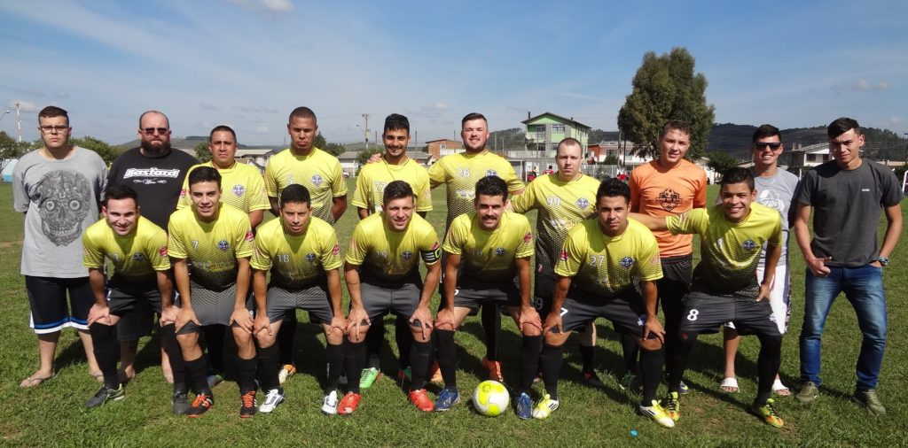

RODADA JOCOL 26/04 FUTEBOL DE CAMPO 1ª DIVISÃO
SABADO 28 DE ABRIL
SANTA HELENA 13:50 AVAI / BELA VISTA 2 X 0 BARCELONA F. C. E
SANTA HELENA 15:30 C. AT. COPACABANA 1 X 0 C. AT. PEREÁ F
VILA MARIZA 13:50 SANTOS F. C. 1 X 2 E. C. EL DOURADO B
VILA MARIZA 15:30 C.F.C. COLORADO 1 X 2 VILA MARIZA B E
BEIRA- RAIA 13:50 NOVA BRACATINGA 1 X 2 FERRARI F. C. B
BEIRA- RAIA 15:30 EXP. VILA COMBONI 2 X 6 E. C. JUVENIL D
STA CATARINA 13:50 FIGUEIRINHA F. C. 2 X 0 GRALHA AZUL F. C. A
STA CATARINA 15:30 JUVENIL BLOCO 2 2 X 6 C.R.C. HABITAÇÃO C
DOMINGO 29 DE ABRIL DE 2018
CAMPO NADIR 09:30 PALMARES F. C. 0 X 4 FORTALEZA F. C. F
CAMPO NADIR 13:50 SÓ NÓIS F. C. 1 X 5 VILA MARIA JUNIOR A
CAMPO NADIR 15:30 CACHOEIRA F. C. 1 X 3 FIGUUEIRINHA JUNIOR C
VILA MARIZA 09:30 CHELSEA / PASSO FUNDO 3 X 3 C. S. A. A
VILA MARIZA 13:50 SÃO JOSÉ F. C 1 X 1 ASS. VILA NOVA C
VILA MARIZA 15:30 AUDAX 4 X 5 JUVENTUS E
BEIRA- RAIA 09:30 ASS. SÃO MIGUEL 0 X 1 ASS. BARRA AZUL A
BEIRA- RAIA 13:50 LAYONS HABITAÇÃO 1 X 4 DON BLACK F
BEIRA- RAIA 15:30 C. AT. BOCA JUNIOR 7 X 2 SÃO FRANCISCO SAPORE D’ITALIA B
STA HELENA 09:30 C.S.K. IMPÉRIO 2 X 3 UNIÃO F. C. F
STA HELENA 13:50 GALÁTICOS 4 X 2 ATLÉTICO SERRANO E
STA HELENA 15:30 HABITAÇÃO F. C. 4 X 6 E. C. CANTAREIRA B
STA CATARINA 09:30 AYMORÉ F. C. 0 X 4 REAL BETS B
STA CATARINA 13:50 VERONA F. C. 1 X 8 S.E.R. SÃO CRISTOVÃO D
STA CATARINA 15:30 GUARANI F. C. 0 X 4 E. C. BAHIA D
